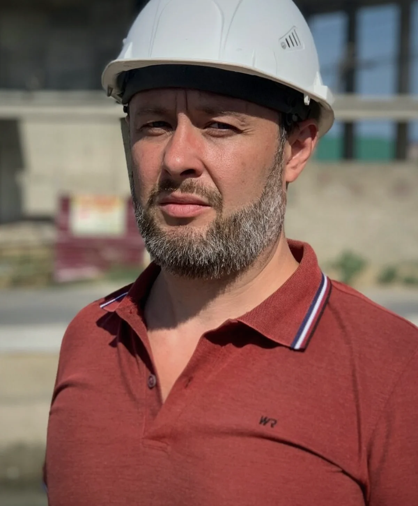

Перед входом в проект
Нужно проверить документацию, сроки, бюджет, обязательства и риски до подписания договора, финансирования, покупки или принятия объекта.
Управление строительными проектами · Москва и регионы
Независимая оценка, антикризисное управление и сопровождение реализации — когда решения по срокам, бюджету, документации и качеству должны опираться на факты, а не на предположения.
Достаточно кратко описать задачу и приложить документы, которые уже есть. Формат участия определяется после первичного разбора объекта.

Сценарии
Работа начинается там, где формального контроля уже недостаточно: нужно понять фактическое состояние объекта, определить критические риски и выбрать действия, которые возвращают проекту управляемость.
Нужно проверить документацию, сроки, бюджет, обязательства и риски до подписания договора, финансирования, покупки или принятия объекта.
График перестаёт отражать реальность, подрядчики не синхронизированы, задачи дублируются, заказчик теряет доверие, а команда работает в постоянном аврале.
Реконструкция, инженерные сети, подготовка к экспертизе, сдаче, получению ЗОС или разрешения на ввод в эксплуатацию.
Собственнику, инвестору или руководителю проекта нужна независимая оценка перед дорогим или необратимым решением.
Форматы участия
Оценить реальное состояние проекта перед решением о входе, финансировании, смене команды или продолжении работ.
Разобрать причины срыва, собрать карту решений, определить ответственность и контрольные точки перезапуска.
Поддержка заказчика или руководителя проекта в переговорах, сложных решениях и контроле критического этапа.
Профессиональный фокус
Не узкая проверка одного раздела, а способность связать техническую, финансовую и организационную картину проекта.
Ценность работы — не в количестве терминов. Важно, чтобы у заказчика появилась прозрачная картина: где риск, кто отвечает, что делать сначала и на какой результат можно опираться.
Факты вместо общих обещаний
Избранные кейсы
Социальный объект
Формирование команды, календарных графиков и финансового плана, подготовка к приёмке и вводу в эксплуатацию.

Инженерные сети
Водоснабжение, хозяйственно-бытовая и ливневая канализация, ЛОС, КНС и согласование проектных решений.

Реставрация
Техническое и финансовое сопровождение сложных строительных и реставрационных работ.

Жилой комплекс
Управление проектом застройки: проектирование, СМР, пусконаладка и передача объекта управляющей компании.

Как начинается работа
Сначала понять контекст и цену ошибки, затем определить формат участия, ожидаемый результат и зону ответственности.
Вы присылаете задачу, этап объекта и то, какое решение нужно принять.
Определяем, какие данные критичны, чего не хватает и какой формат даст практический результат.
Фиксируем объём работы, сроки, результат, точки взаимодействия и правовую модель.
Подготавливаем основу для решения: карту рисков, план действий, управленческие выводы или формат сопровождения.
«Сложный объект не становится понятнее от количества совещаний. Нужна ясная картина, ответственное решение и порядок действий.»
Опишите ситуацию в двух-трёх предложениях. Даже неполного описания достаточно, чтобы понять, с чего начать.
Частые вопросы
В фокусе — сложные строительные проекты, реконструкция, инженерные сети, социальные и инфраструктурные объекты, жилые комплексы и критические этапы реализации. Формат работы определяется масштабом задачи и требуемой ролью, а не только типом объекта.
Да. Аудит перед входом в проект нужен именно для решений, которые не стоит принимать на предположениях: входить ли в проект, продолжать ли работы, менять ли команду, финансировать ли следующий этап.
Достаточно кратко описать объект, стадию, главную проблему, срок принятия решения и перечень документов, которые уже есть. Не нужно собирать идеальную папку заранее.
Экспертное сопровождение — это независимая управленческая и техническая работа по конкретной задаче. Формальные функции строительного контроля, технического заказчика и полномочия по документам определяются для каждого проекта отдельно после анализа договорной и правовой модели.
Да. В такой ситуации важно сначала не добавить ещё один слой отчётности, а понять причины срыва, ограничения и очередность действий, которые реально можно выполнить.